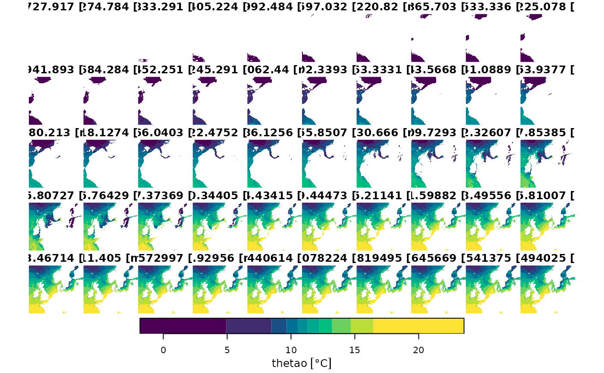

Using stars_proxy
objects in combination with the CopernicusMarine package introduces
opportunities to efficiently work with Data from Copernicus Marine
services on the fly.
The great thing about these proxy objects is that they will not read any data unless it is needed. So, you can connect to a dataset from the Copernicus server without having to read raster data. Instead it will only collect meta data about the raster’s dimensions and bands (attributes). The actual raster data is only downloaded when you need it.
Setting Up a Proxy Object
You can either set up a proxy object by calling
cms_native_proxy() or cms_zarr_prox(). The
first uses the ‘native’ service. In this case the data is already
structured in chunked files and the added value of proxy objects is not
that obvious. Therefore, in this vignette, we will focus on objects
created with cms_zarr_proxy(). It will connect with an
entire layer in a product.
library(CopernicusMarine)
library(stars, quietly = TRUE)
#> Linking to GEOS 3.12.1, GDAL 3.8.4, PROJ 9.4.0; sf_use_s2() is TRUE
my_proxy_gc <- cms_zarr_proxy(
product = "GLOBAL_ANALYSISFORECAST_PHY_001_024",
layer = "cmems_mod_glo_phy-thetao_anfc_0.083deg_P1D-m",
asset = "geoChunked")
my_proxy_tc <- cms_zarr_proxy(
product = "GLOBAL_ANALYSISFORECAST_PHY_001_024",
layer = "cmems_mod_glo_phy-thetao_anfc_0.083deg_P1D-m",
asset = "timeChunked")
print(my_proxy_tc)
#> stars_proxy object with 1 attribute in 1 file(s):
#> $thetao
#> [1] "[...]/timeChunked.zarr"
#>
#> dimension(s):
#> from to offset delta refsys
#> longitude 1 4320 NA NA NA
#> latitude 1 2041 NA NA NA
#> elevation 1 50 NA NA udunits
#> time 1 1367 2022-06-01 1 days Date
#> values x/y
#> longitude [-180.0417,-179.9583),...,[179.875,179.9584) [x]
#> latitude [-80.04167,-79.95833),...,[89.95834,90.04166) [y]
#> elevation [-5727.917,-5274.784) [m],...,[-0.494025,0.5533251) [m]
#> time NULLSelecting an Asset Type
The only downside from working with proxy objects is that you need to
know which asset type you wish to use. When subsetting data with
cms_download_subset() this selection is automated based on
your selection criteria. But when working with a proxy object, you may
not know which slices you wish to select in advance.
In general, if you wish to work with long time-series in a small
geographical area, it’s most efficient to work with
"geoChunked" data. Whereas, if you want to work with a
short time period, but on a large geographical scale, it is better to
use "timeChunked" data.
Slicing a Proxy Object
As you can see from the proxy object printed above, it has dimension that stretch pretty far. It has daily data for nearly four years, in 50 depth layers with global coverage. If you would try to read this raster data, it will almost certainly fail as it would require thousands of Gb of memory which is simply not available on most devices.
Fortunately, the proxy object can easily be sliced, by selecting
index values with the bracket operator ([). The first index
represents the band (attribute), and we skip it, next are the
x and y coordinate, followed by the elevation.
The last dimension is time, were we select the first four hundred
records.
time_slice <- my_proxy_gc[,2000, 1000, 48, 1:400]
show(time_slice)
#> stars_proxy object with 1 attribute in 1 file(s):
#> $thetao
#> [1] "[...]/geoChunked.zarr"
#>
#> dimension(s):
#> from to offset delta refsys values x/y
#> longitude 2000 2000 NA NA NA [-13.46,-13.37) [x]
#> latitude 1000 1000 NA NA NA [3.208,3.292) [y]
#> elevation 48 48 NA NA udunits [-2.646,-1.541) [m]
#> time 1 400 2022-06-01 1 days Date NULLAs you can notice, this slicing is super fast. This is because no
actual data is transfered yet. It isn’t until st_as_stars()
is called when the data is downloaded. Since in this particular case we
have only selected a single raster cell, it makes sense to cast the
object to a data.frame. We can then plot the time
series.
time_slice <- st_as_stars(time_slice)
plot(st_get_dimension_values(time_slice, "time"), time_slice$thetao,
xlab = "date", ylab = "temperature", type = "l")We can also select a specific area, for which we will use the time chunked proxy.
geo_slice <- my_proxy_tc[,2000:2500, 1500:1750, 50, 500]
plot(geo_slice, col = hcl.colors(10))